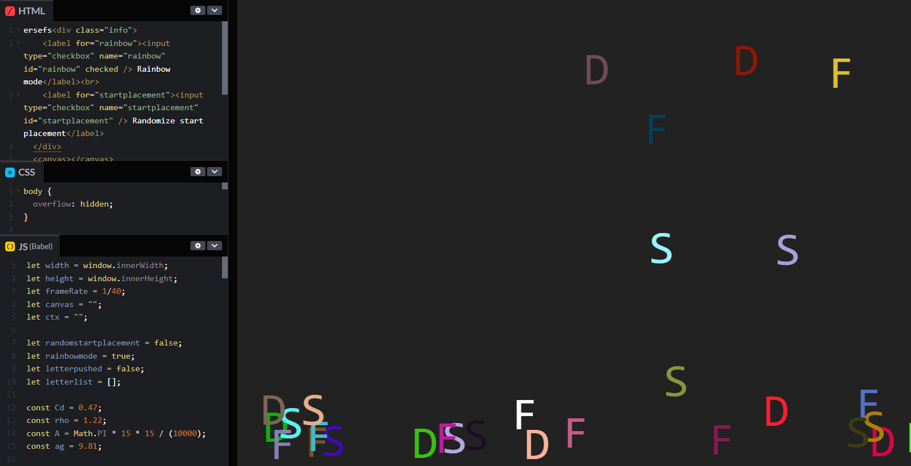
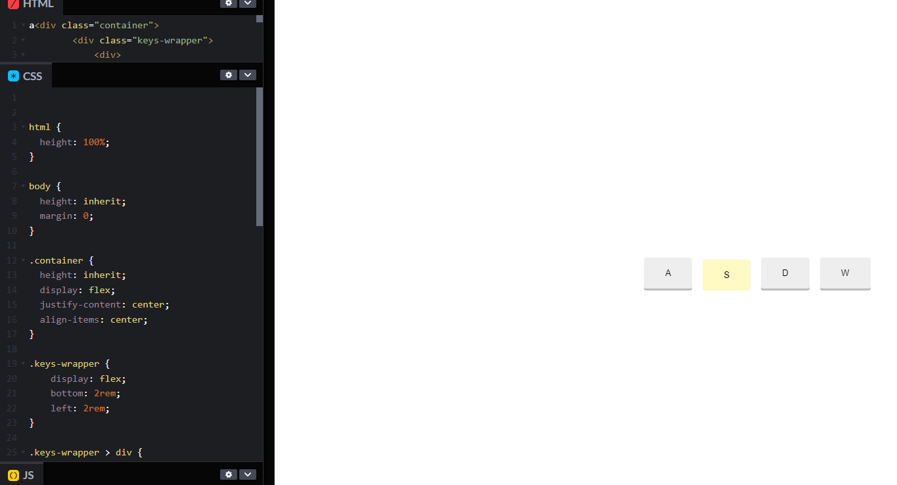

Coming up with an idea
The interaction that I was given to work with was typing with a keyboard. At first I thought that
this would be a simple interaction to work with, however I realized that coming up with a solid idea
would be difficult. I went through many different ideas and even draft coded some of them in
parts.
One idea that I think would have worked well was when you press the keyboard, that
character shoots up and bounces around. I made a draft of it and it was fully complited, however im
not sure how it even works and its a miracle that it does

The code was mostly copy and pasted and edited to fit with
each other so I couldnt use it anyways. And I dont fully know how to use Matter.js and I didnt have
the time to try to learn it.
I also coded a small pen on CodePen, to see if I could make
somthing keys on the screen when it is pressed down. I wasnt sure how I would use it but I made it
to see what I can do.

An idea I had that I really like
was to use the keybpard inputs to change what was showing up on screen. You press a button and you
toggle between night and day. In the day you can press keys to make elements show up to decorate the
surroundings. I made clouds for the day time and stars for the night time. I was going to make this
using P5.js. However, after talking with the prof, I decided that the best thing to make that would
make you interact with the keyboard that seperates it from other input and interactive elements was
the ability to type out words. So I decided to make a chatbox that will annoy you.
Creating the chatbot
It took a while to figure out how I wanted to make the chatbot look. I decided to go for a simple
look and figured out how to have messages show up on the screen and replacing the last message. It
was surprisingly simple. Anyways, I put some effort into creating the text box where the user types
their inputs. I then made simple if statements to get basic replies from the chatbot when you type
in hello. Then made it as a function that is called once you press the enter key.
After I
got these basics figured out, I tried working with arrays to get
multiple different answers rather that one fixed reply. I tried working with group
arrays where there is just one const array and it has a few groups. I made one with possible
user entries, and then made an array with responses that the bot would use. I tried using for loops
but it just wasnt working. I then came up with the solution that I stuck with. This just allows me
to have many different responses from the bot in an organized way, but not for the user. To keep the
js file from becoming a mess, I put the dialogue arrays in a seperate js file. I think it works
pretty well.
After the array mess, I added some random variables to make some annoying things
happen.. at random. I got pretty annoyed while testing everything out becuase I would keep getting
rickrolled or the window would close. I think the most unnoticible but after a bit noticible
annoying
thing is that sometimes the textbox where the user inputs their text, after they hit enter, it
doesnt clear. So you are forced to delete it to type something new.
After adding some extra
things to the website, I finally finished.